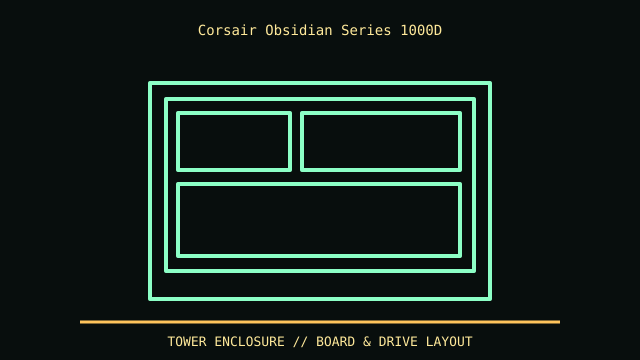

[ MODEL IDENTIFICATION // OBSIDIAN 1000D SUPER-TOWER, CC-9011148 FAMILY ]
Corsair Obsidian Series 1000D
698 × 307 × 697 mm (L × W × H), about 29.5 kg empty for listed family. Large enough to require planning for doors, floor load and two-person handling.

REVISION CAVEAT: CC-9011148 suffixes denote region/finish bundles; verify trays, fan frames, controller, glass and exact SKU.
Specifications & fit
| Catalog subcategory | Tower and legacy desktop cases |
|---|---|
| Model / generation | Obsidian 1000D super-tower, CC-9011148 family |
| Dimensions / form factor / clearance | 698 × 307 × 697 mm (L × W × H), about 29.5 kg empty for listed family. Large enough to require planning for doors, floor load and two-person handling. |
| Drive bays | Published maximum five 3.5-inch and six 2.5-inch positions; tray/radiator/dual-system layout affects simultaneous fit. |
| Compatibility | Main E-ATX/ATX plus secondary Mini-ITX system mount; system PSU, radiator/fan tray and accessory arrangements constrain combinations. |
| Revision identification | CC-9011148 suffixes denote region/finish bundles; verify trays, fan frames, controller, glass and exact SKU. |
Compatibility & preservation notes
Main E-ATX/ATX plus secondary Mini-ITX system mount; system PSU, radiator/fan tray and accessory arrangements constrain combinations.
Remove glass before handling. Preserve rails, motherboard plates, trays and wiring for both systems; retain original packaging if possible.
- Record the complete model/SKU, serial/date label, board and bay/backplane identifiers, accessories and manual revision before disassembly.
- For tower cases, measure the installed board width, drive cage, radiator/fan stack, GPU and PSU cable bend as one build; the advertised maximums may compete.
- Keep original brackets, fasteners, trays, feet and front-panel parts labeled with the chassis. Do not force components into modified or incomplete specimens.
Manufacturer, archive & standards sources
- Corsair — Obsidian 1000DPrimary manufacturer or technical-reference source for this named model; use the exact SKU/document revision.
- Intel — Desktop board form factorsAdditional manufacturer, archival, or dimensional reference. Options and specimen condition can change fit.
Approximate or convention-dependent dimensions are marked as such. Measure the individual unit for restoration, shipping and installation.